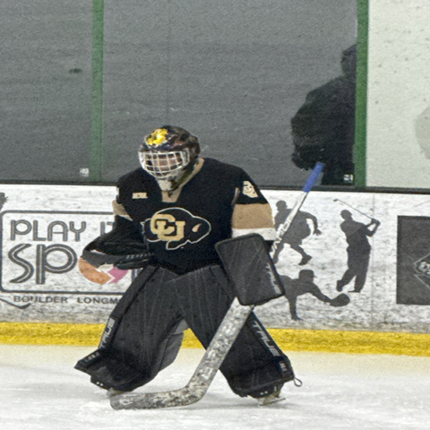

Sport Stable Superior
Goalies are examples of a modern day gladiator or a present day Darth Vader. Their equipment and mask afford the goalie an opportunity to individually express themselves; the last bastion of personalization in a team based environment. The mask allows them to express themselves without saying a word. Goalies must crave pressure. Goalies don’t score in games, but they can be the difference between a win or a loss. Goalies must be passionate about protecting the net. Although shooters take and miss shots, goalies are expected to make every save. The puck must pass through five other players on the ice to get to the goalie, but it is the goalie whose measurement is judged by goals against. Goalies enjoy being the last line of defense. They like the mental challenge of preparation and the attention to detail because one wrong move could cost them the game. When goals are scored, most people blame the goalie; they may not see the terrible pass, bad defense, and lack of clearing the puck, which led to the goal. A goalie is either the hero in a win or the goat in a loss.
There are attributes that every good goalie must possess. I call these attributes STOPPERs. Each item can vary in intensity but the great goalie must have them all. The STOPPERs are Skills, Talent, Opportunities, Physical presence, Psychological presence, Experience, and Resources.
I have seen a multitude of circumstances regarding goalies in the years I have coached hockey. Even though approximately 70 percent of winning a game is because of exceptional goaltending, it is almost always the most overlooked detail in hockey. Even the NHL thinks the fix for what ails hockey lies in the goaltender. The problem happened a long time ago when the game got faster and the equipment came with it. Goalies became more specialized, more athletic, and more scientific. They ceased being the “spacey weird guy” and became intelligent students of the game. The say you can’t make it through the playoffs without a great goalie, but very few teams or coaches understand the position or the person in that position.There are many misconceptions about goalies in the ranks of hockey, and many of them have little immediate effect on the play and mindset of a goalie. I’ve seen some pretty illogical and detrimental behavior perpetrated on goalies and I hope those incidents were soon forgotten. My purpose in writing this is to give coaches a different perspective. As a person who coaches, plays, and studied goalies, I hoped my experiences would be helpful in other people’s understanding of the trials and tribulations the goalies go through to get to where they are. With any luck, people like me can help people understand the differences between good and great goalies.